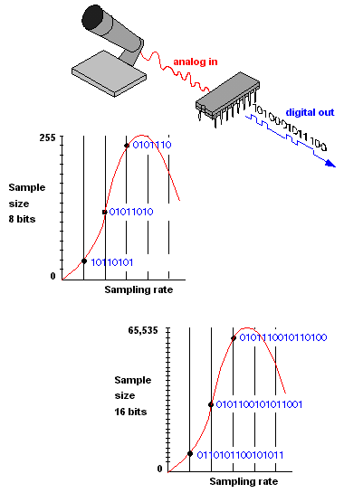

Hoe wordt beeld en geluid opgeslagen?
Beeld wordt opgeslagen als een reeks pixels in bestandsindelingen zoals JPEG of PNG,
terwijl geluid wordt opgeslagen als digitale audiogolven in formaten zoals MP3 of WAV.
Beide worden bewaard op opslagmedia zoals harde schijven of in de cloud en kunnen worden bewerkt met
specifieke software.
Geluidsbestanden kunnen worden gecomprimeerd om opslagruimte te besparen. Zowel beeld als geluid worden
digitaal opgeslagen, waardoor ze gemakkelijk kunnen worden gekopieerd, bewerkt en gedeeld.
Bitmap- en vectorafbeeldingen
Filmpje over bitmap- en vectorafbeeldingen
Bitmapafbeeldingen zijn opgebouwd uit pixels, hebben een vaste resolutie en zijn geschikt voor foto's.
Vectorafbeeldingen zijn opgebouwd uit wiskundige paden, zijn schaalbaar zonder verlies van kwaliteit
en ideaal voor illustraties en logo's. De keuze hangt af van het beoogde gebruik en de vereisten voor de afbeelding.
Sampling
Sampling met een computer omvat het omzetten van een analoog geluidssignaal naar discrete digitale datapunten met behulp van een ADC.
Deze gegevens worden opgeslagen als een digitaal geluidsbestand en kunnen worden bewerkt en afgespeeld met audiobewerkingssoftware.

Sample rate
Sample rate (bemonsteringsfrequentie) in een computer verwijst naar het aantal audio-samples dat per seconde wordt vastgelegd
of afgespeeld bij het opnemen of afspelen van geluid.
Het wordt gemeten in Hertz (Hz) en bepaalt de audiokwaliteit, waarbij hogere sample rates doorgaans betere kwaliteit bieden maar
grotere bestanden genereren.
De keuze van de juiste sample rate hangt af van de toepassing en de gewenste audiokwaliteit.
Tekstcompressie
Tekstcompressie in een computer is het proces waarbij tekstuele gegevens worden gecomprimeerd om opslagruimte te besparen
of gegevensoverdracht te versnellen.
Het maakt gebruik van algoritmes om herhalingen en patronen te identificeren en de tekst op een efficiëntere manier op te slaan.
Er zijn twee hoofdtypen: lossless (behoudt alle gegevens) en lossy (kan enige gegevens verliezen).
Het wordt toegepast op tekstbestanden, internetgegevens en meer, afhankelijk van de toepassing en vereisten.